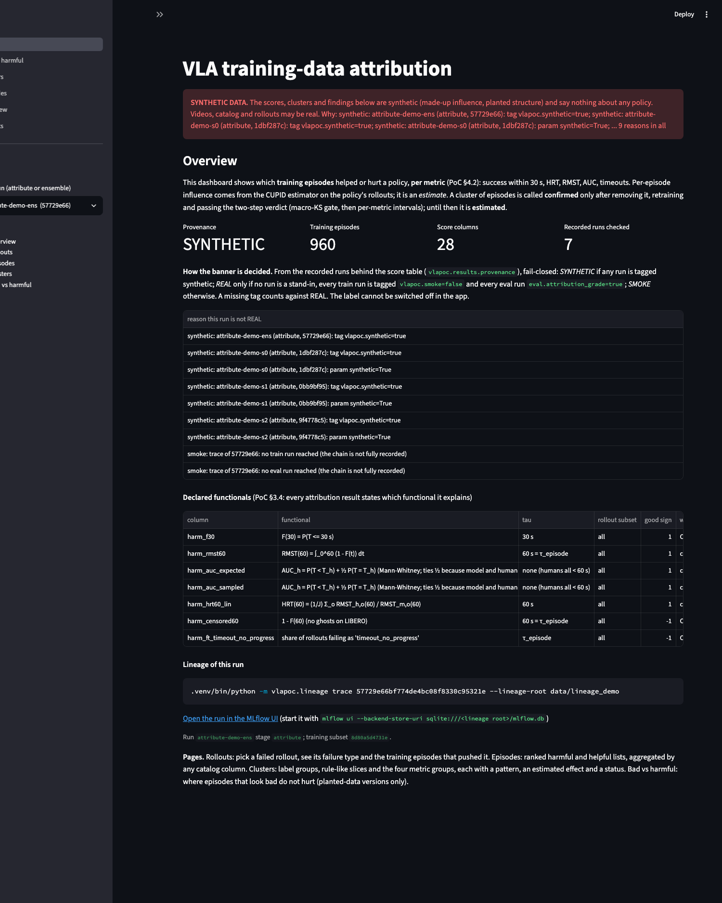
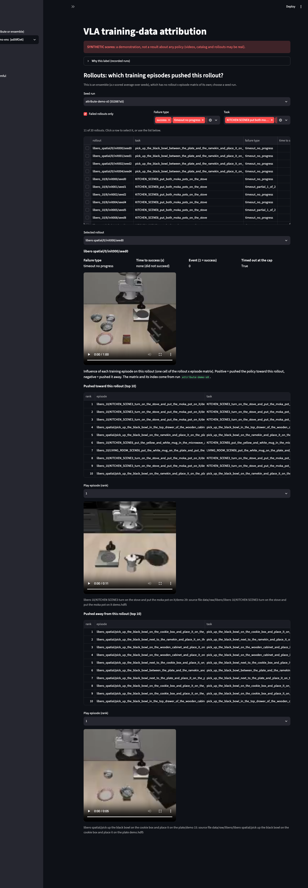
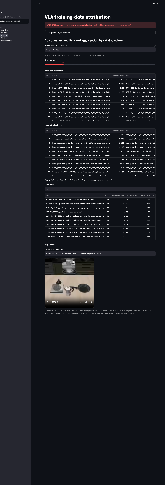
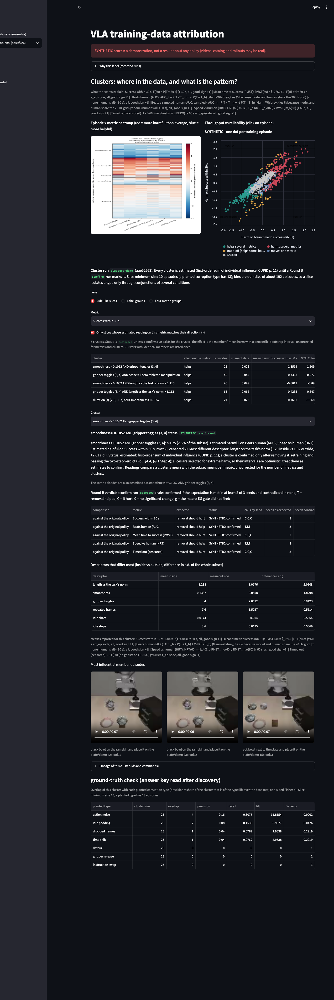
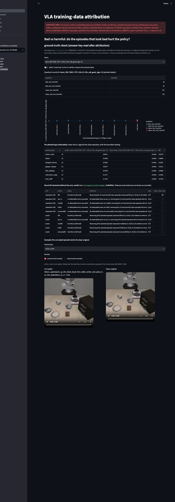

A live local web app that shows which groups of training recordings help or hurt a robot policy, a "bad-looking but not harmful" view, and a step-by-step guide a Claude session on the GPU server can follow. It runs today on real videos with synthetic scores; no real attribution result exists yet.
A robot policy is a model that learned to do tasks by imitating recorded demonstrations. Some recordings help it and some hurt it, and the project is about finding out which. Until now the answer was spreadsheets of numbers, one row per recording. This feature turns that into something a stakeholder can look at: a small web app on this laptop where you pick a failed attempt and see which training recordings pushed it, with video, and where you see groups of recordings (all the long ones, everything from one kitchen scene) that help or hurt.
The app also shows the most interesting finding the spec asks for: recordings that look bad (we deliberately damaged 91 of them, so we know which) but turn out not to hurt, and clean-looking ones that do. And there is a runbook, a written step-by-step guide that a fresh Claude session on the GPU server can follow without us, stopping to ask the owner at 13 marked points.
The result that matters: everything works end to end on this machine, and a check shows that real server results will appear in the same app with no code change. What is still unknown is whether any of it is true of a real policy. Every score, group and verdict in the demo is invented (synthetic) and labelled as such; the real scores need the GPU server. A group found from scores is only an estimate until we remove it, retrain, and the test passes.
Read this before the demo section. There are no real attribution results in this report. The videos, the recording catalog and the 20 test attempts shown are real. The influence scores, the groups found from them, the "bad but not harmful" tables and the retraining verdicts are SYNTHETIC (generated by us with known structure so the screens can be tested). One small real run on this Mac (a 2-step training, 2 test attempts, shown as SMOKE) proves the real code path but is not attribution-grade. Everything synthetic carries a SYNTHETIC tag on screen and in the filename (_SYNTHETIC).
--random-draws 2 adds a second draw (+33 jobs, +3 trainings).server_pipeline.py --dry-run). The GPU-hours assume about 4 hours per training, which is an inference from earlier runs, not a measurement for this pipeline.Every term and label used on this page and the story pages, in the order you meet them. Each is also defined where it first appears.
| Term | Plain meaning |
|---|---|
| The robot-learning setting | |
| Episode, demonstration, recording | One recording of a person guiding a simulated robot arm through a task once. The three words mean the same thing here. |
| LIBERO | A benchmark of simulated robot-arm tasks (household-style, e.g. "put the moka pot on the stove") with recorded demonstrations. Our corpus: 960 candidate recordings over 20 tasks. |
| LeRobot | An open-source Hugging Face library and file format for robot-learning data. Our datasets and the training code use it. |
| Policy; SmolVLA | A policy is a trained model that decides what the robot does next from camera images and an instruction. SmolVLA is the compact open-source one we train. |
| Rollout | One attempt by a trained policy at a task in the simulator, recorded with video and judged success or failure. "Failure type" says how it failed (e.g. timeout_no_progress: ran out of time without progress). |
| Seed | One random starting point for training. Several seeds show how much of a result is luck. |
| Influence and the metrics | |
| Training-data attribution; influence | Working out which training recordings are responsible for how a policy behaves. Influence is a number per recording: how much it pushed a given outcome up or down. |
| CUPID | The published method (with MIT-licensed code) we use to compute influence of each training recording on rollout outcomes. |
| Metric / functional; time cap τ | The exact quantity a score is about. F(30) = chance of finishing within 30 s ("Success within 30 s" on screen). RMST = average time to success counted up to a cap ("Mean time to success"). AUC = chance the robot beats a human time ("Beats human"). HRT = robot time relative to human time ("Speed vs human"). Censored = share that never finished by the cap ("Timed out"). τ (tau) is the cap in seconds: 60 s for most. The spec (§3.4) requires every result to say which one it explains. |
| Harm score; z-score | Positive = the recording pushed the metric the wrong way (harmful). A z-score is a score rescaled to mean 0, spread 1, so "z ≥ 1" means "one spread above average". |
| Family W | The five whole-task metrics above (F(30), RMST, AUC, HRT, censored) that we attribute. |
| Finding groups | |
| Cluster | A group of training recordings that share something and move a metric together. We build them three ways ("lenses"). |
| Lens 1: label groups | Groups by recorded metadata: task, scene, suite. (The catalog has no operator or date for LIBERO, so only these vary.) |
| Lens 2: rule-like slices; sliceline | Rules such as "task-relative length above 1.113 AND scene = X". sliceline is an open-source tool (SliceLine, SIGMOD 2021) that finds the rules where a score is unusually high. We cut each behaviour measure into ranges first because it needs categories. |
| Lens 3: the four metric groups | The spec's §4.2 grouping of recordings by how they move the five metrics: consistent helpers, consistent harmers, trade-off (helps some, hurts others) and metric-specific (moves one). We use the owner-approved "at least 2 of 5 metrics" rule. |
| Descriptors | Behaviour measures per recording: length, smoothness, idle share, gripper toggles, repeated frames, task-relative length, and so on (including the label-free checks H1–H8 built earlier). |
| H1–H8 | Eight label-free checks from the ground-truth feature that guess whether a recording is damaged, from its shape alone (e.g. unusual length, repeated frames). |
| Real, smoke, synthetic | |
| SYNTHETIC | Scores we generated with known structure. They say nothing about any real policy. The label is computed from the recorded runs, never switched by hand. |
| SMOKE | Real code on a tiny real run (2 training steps) to prove the path works. Not attribution-grade. |
| REAL | Every upstream run is a full server run, none synthetic, none a stand-in. A missing tag counts against REAL (fail-closed). |
| Lineage store; MLflow; provenance | The database of every run and its inputs and outputs (MLflow is the open-source tool). Provenance is the chain behind a number. The dashboard reads only from here, with each file checked against its recorded hash (sha256). |
| Drop-in | Pointing the same app at a real run and seeing it display, with no code change. |
| Testing a group causally | |
| Round A / Round B | Round A: train the baselines and compute influence (the "attribution chain"). Round B: retrain with a chosen group removed (a removal arm) and check whether results change. |
| Two-step verdict | PoC §4.4. Step 1, the macro-KS gate: is the overall pattern of outcomes different at all (a Kolmogorov-Smirnov test)? Step 2: per-metric confidence intervals with Holm correction say in which direction. |
| Estimated / confirmed / not confirmed / refuted | Our status words. Estimated: from scores only. Confirmed: removal met the expectation in at least ⌈2n/3⌉ of n seeds (2 of 3) and none contradicted it. Not confirmed: too few seeds, or the gate did not fire. Refuted: the opposite direction. |
| Matched random control | A random set of clean recordings with the same per-task counts as the removed group, removed instead, to check that "removing something" is not the cause. |
| Oracle arm (positive control) | Retrain without all 91 planted episodes. If anything shows an effect, this does. It removes 91, so it does not show power at 13. |
| The bad-looking-but-not-harmful view | |
| Planted corruption; answer key; v3/candidate | An earlier feature damaged 91 of 960 recordings (13 each of seven types: action noise, detour, dropped frames, gripper release, idle padding, instruction swap, time shift). The answer key records which. v3/candidate is that damaged dataset. Methods are blind: they cannot open the key. Only scoring code reads it, after the method has finished. |
| "Looks bad" / "hurts"; four quadrants | Looks bad = planted as corrupt (or flagged by H1–H8). Hurts = harm z-score of at least 1. Quadrants: looks bad & hurts, looks bad & no detectable harm, looks clean & hurts, looks clean & no detectable harm. |
| Welch interval | A confidence interval for the difference between two group averages that does not assume equal spread. We use it (scipy) because the first method, a bootstrap, over-called at 13 vs 869 episodes (9.3% false readings vs 5% target). |
| The app and the runbook | |
| Streamlit; AppTest | Streamlit is an open-source Python library for local web apps. AppTest is its headless test runner. |
| Runbook; skill; SLURM; STOP AND ASK | The runbook is a Claude Code "skill" file (.claude/skills/server-run/SKILL.md) that a session on the GPU server follows. SLURM is the cluster's job scheduler. STOP AND ASK marks a point where the session must stop and ask the owner. |
| Repoint | A copied MLflow store still points at the old machine's folders; repointing rewrites those paths so the copy can be read. |
CUPID…2506.19121.pdf p. 11 (summed influence only approximates group effects, which is why clusters are "estimated") and Fig. 4 caption p. 8 (quality measures can "degrade performance", precedent for §9.2). DataMIL…2505.09603.pdf p. 6 (cluster-level influence is established practice). PhAIL…2605.29710.pdf p. 2 and p. 6 (run explorer with synchronized video is the design reference for the rollout page).--matched-random costs 45 jobs, not the 33 first planned (the chain gives each matched arm its own comparisons).The influence matrix is now recorded and one loader reads results back; the SYNTHETIC / SMOKE / REAL label is computed from the runs (7/7 label cases correct; a tampered file is refused).
On synthetic scores the planted slice is the top harm slice on HRT in 10 of 10 seeds and a false alarm on F(30) in 0 of 10.
After discovery, each cluster is compared with the answer key (hand-built check: precision 0.5, recall 1.0, lift 36.9, Fisher p 1.2e-22).
A cluster becomes a removal arm: 21 jobs / 6 trainings for two picks (45 / 12 with matched random), and a confirm rule that can say confirmed, not confirmed or refuted.
Five pages in Streamlit; a real browser check measures every chart at 240 px or taller and a row click that works.
Real videos, catalog and 20 real rollouts with synthetic scores (44 runs tagged synthetic) plus the real 2-step SmolVLA smoke chain; 13 MiB store.
Re-tagging a chain to what the server writes removes the banner with no code change; one synthetic tag brings it back.
15 steps, 13 stop-and-ask points, every dry-run count equal to a fresh run (116/24, 129/33, 21/6, 45/12); 5 steps checked here, 10 unchecked until a server session.
The §9.2 view over the planted labels; bounded wording ("no detectable harm, CI …"), Welch false-call rate 5.9% vs bootstrap 9.3% on a null test.
Round B planted: 11 arms, 129 jobs / 33 trainings (~132 GPU-h inferred), with a positive control and a bounded verdict wording.
Lines added on branch dashboard since the training-attribution branch (git diff --numstat 1d18247 HEAD): 34 files, 6,342 insertions, 50 deletions, 57 commits.
| File | Change | Lines |
|---|---|---|
vlapoc/results.py | Read-only loader of the lineage store and the provenance label | +360 |
vlapoc/clusters.py | The clusters stage: three lenses, patterns, estimated effects | +538 |
vlapoc/discrepancy.py | Bad-looking vs harmful table, Welch readings, H1–H8 layer | +393 |
vlapoc/planted_arms.py, confirm.py | Planted-type removal arms and statuses; cluster confirmation | +282, +129 |
vlapoc/recovery.py, synthetic.py, video.py | Cluster-vs-key scoring; synthetic score generator; H.264 clips | +132, +99, +98 |
dashboard/app.py, common.py, words.py, views/* | The five-page Streamlit app and its plain-language layer | +788 |
scripts/stage.py, server_pipeline.py | New subcommands; --round-b, --round-b-planted | +142, +154 |
scripts/dashboard_demo.py, dashboard_screenshots.py, repoint_lineage_store.py | Demo-store builder, headless-browser capture and measurements, store repointing | +299, +169, +71 |
.claude/skills/server-run/SKILL.md | The 15-step server runbook | +314 |
scripts/verify_dashboard.py, verify_runbook.py | The proofs (10 modes, 89 checks; 10 runbook checks) | +1,825, +332 |
Everything on this section's screens and in the tables is SYNTHETIC unless stated: the dashboard is running on the demo store. Real: the videos, the catalog, the 20 test attempts, the 91 planted labels, the dry-run counts and the smoke run.


libero_spatial/0/init000/seed0, failure type "timeout no progress", real video) and the ten training episodes that pushed toward it and the ten that pushed away, each playable. The influence values are synthetic; the failure type and videos are real (the failure type equals returns.parquet's).

discrepancy_episodes.parquet and equal what the Bad-vs-harmful page shows (verify_dashboard.py --app, check 5.5b). Because the scores are invented, this shows the view, not a fact about any policy. It is also an estimate; the retraining arms in S10 are what would make "not harmful" a causal claim.
| Planted type (13 episodes) | Metric | Difference vs clean (z) | Welch 95% interval | Holm p (5 metrics) | Reading (estimated, uncorrected across 7 × 5) |
|---|---|---|---|---|---|
| idle_padding | HRT (speed vs human) | 2.02 | [1.26, 2.78] | 0.0003 | harmful |
| idle_padding | F(30) (success within 30 s) | 0.03 | [−0.56, 0.62] | 1.0 | no detectable harm |
| action_noise | HRT | 0.10 | [−0.45, 0.64] | 1.0 | no detectable harm |
SYNTHETIC check, not a result. From artifacts/s9_discrepancy_types_SYNTHETIC.csv, produced by the verifier with a planted effect (idle-padding members shifted +2 spread on HRT only, others not shifted): the reading recovers exactly what was planted. So what: the method can tell "harmful on one metric, no detectable harm on another" for the same corruption type. On a null test with no planted effect, the Welch rule called 41 of 700 type-metric cells (5.9%); the earlier bootstrap called 65 (9.3%) against a 5% target.
artifacts/b2_dry_run_counts.json and were re-matched against fresh dry runs by verify_runbook.py (check 8.2). Without the oracle pair Round B planted is 108 jobs / 27 trainings.artifacts/demo_manifest.json).# the live app on the demo store (open http://localhost:8501)
.venv/bin/streamlit run dashboard/app.py -- --lineage-root data/lineage_demo --scores attribute-demo-ens
# rebuild the demo store (about 8 minutes on MPS; includes the real 2-step smoke chain)
.venv/bin/python scripts/dashboard_demo.py build --with-smoke --force
# the proofs (one mode per story group)
.venv/bin/python scripts/verify_dashboard.py --results # also --clusters --planted --discrepancy --round-b --planted-arms --app --render --demo --dropin
.venv/bin/python scripts/verify_runbook.py
# the server plan: count only, submits nothing
.venv/bin/python scripts/server_pipeline.py --tag v3cand --subset v3/candidate --curation per_task --metrics f30 hrt60_lin --dry-runCaptured from the analyzer's round-3 reruns (artifacts/verify_dashboard_*.json, verify_runbook.json): results 12/12, clusters 14/14, planted 7/7, discrepancy 10/10, round_b 13/13, planted_arms 8/8, app 11/11, render 4/4, demo 6/6, dropin 4/4, runbook 10/10; the dry run prints would submit 116 jobs (24 trainings). Run IDs and timings in these JSONs change on each run.
The Streamlit options are --clusters <run> and --mlflow-ui <url>; environment variables DASH_LINEAGE_ROOT, DASH_SCORES, DASH_CLUSTERS, DASH_MLFLOW_UI override them. To show real server results, point --lineage-root at the repointed store and --scores at the real ensemble run (runbook Steps 9 and 14).
The runbook is a Claude Code skill, server-run, so a fresh session on the GPU server loads it automatically, and CLAUDE.md now points to it (committed in 5e39224, owner-approved). It cannot be run here, so each step carries a tag.
| Steps | What | Tag |
|---|---|---|
| 1–3 | Preflight; copy inputs (including the smoke checkpoint, 1.5 GiB) and repoint the copied store; smoke on CUDA | unchecked until server |
| 4 | Round A dry run: 116 jobs / 24 trainings | checked here |
| 5–7 | Submit, monitor, recover (--from) | unchecked until server |
| 8–9 | Clusters, planted-type scoring and discrepancy by hand; the real dashboard | checked here |
| 10 / 11 | Round B for clusters: dry run 21/6 (45/12 matched) / submit and confirm | checked here / unchecked |
| 12 / 13 | Round B planted: dry run 129/33 / submit and verdict | checked here / unchecked |
| 14–15 | Results back (repoint again); known server-only risks (database locking, smolvla_base revision 5e8d12a6 vs pinned d9f33c94) | unchecked until server |
Why the repoint step exists (measured). MLflow stores absolute artifact paths in mlflow.db. A store copied from the Mac to the server (or back) still points at the old machine's folders, and the loader fails with "Failed to download artifacts from path 'attribution_scores.parquet'". scripts/repoint_lineage_store.py rewrites them (dry run first; 43 runs rewritten in the test; read check afterwards returns the 960 × 34 score table). The analyzer caught that the first runbook draft omitted this.
Stop-and-ask. 13 marked points: preflight failure, store-relocation read check, missing smoke checkpoint, revision mismatch, failed check, odd numbers, failed job, disk below threshold, any needed code change, a SYNTHETIC or SMOKE banner on supposedly real results, the Round B cluster pick, cost approval, "database is locked". Rules in the skill: no code edits, no push, no deletes.
What is verified. verify_runbook.py (10/10): every command in the skill exists and its flags parse (23 commands; 11 executed locally, 12 only parsed), every count equals a fresh dry run, every step is tagged, every smoke-checkpoint dependency is in the copy list, and the store-repoint worked on a moved copy of the demo store. What is not: anything that needs CUDA, SLURM or the server's disk layout.
The analyzer re-ran every proof itself in round 3 (see the table in the demo section) and the full regression: verify_attribution.py 32/32 and the training-attribution modes (--blind, --functionals 18/18, --pipeline 9/9, --step4 13/13, --recovery 11/11, --names 13/13, --groups 9/9, --integration 12/12). The real data/lineage/mlflow.db has the same sha256 before and after (306af4123fda…bde79). In a real headless Chrome at 1400 px: the Clusters scatter is 394×355 px, the Bad-vs-harmful strip chart 839×240 px, the heatmap axes 566×611 px, clicking row 5 of the Rollouts table selects that rollout, no number is truncated, and the sidebar has no stray auto-generated page links (--render, 4/4).
Not verified: that any of this holds for a real policy (no real scores exist); the GPU-hour estimates; steps 1–3, 5–7, 11, 13–15 of the runbook; the long --local-smoke (8-minute MPS chain) was not rerun separately in the last rounds, but its chain is the demo build's smoke run; the live app itself was not launched by the analyzer in round 3 (it relied on the headless-Chrome --render and re-captured screens), and row-click geometry depends on Streamlit 1.66.1, so it must be re-checked after an upgrade.
| Round | Verdict | Sent back to | What was caught |
|---|---|---|---|
| 1 | REWORK | planner + executor | Every verifier passed, but a real browser showed: the Bad-vs-harmful chart was 18 px tall (every point on zero), the Rollouts row click did nothing, the auto-generated sidebar links opened blank pages. The runbook never repointed the store and its Step 3 probe command failed. The per-type reading used a bootstrap that over-calls (9.9% vs 5% on the analyzer's own simulation); it had to be Welch and say "uncorrected". The pages were not stakeholder-ready (raw provenance strings, snake_case labels). |
| 2 | REWORK | executor | All nine round-1 items fixed and re-measured. New: the runbook's copy list omitted the smoke checkpoint that Step 3 loads, so a fresh server session would stop there; the lineage command shown on pages (--lineage-root) was rejected by the CLI; the heatmap wrote a stray untracked .axes.json on every run. |
| 3 | PASS | none | All three fixed; full regression passes; mlflow.db unchanged. Non-blocking items (distinct quadrant colours, "also found for" caption, plain names in pattern text) done. |
| Mechanism | Open-source alternative | Decision | Why |
|---|---|---|---|
| The live app | Streamlit (adopted); Dash, Panel, Gradio, Spotlight, FiftyOne, LeRobot viewer, Rerun | adopted Streamlit 1.66.1 | 5 pure-wheel dependencies on Python 3.14; Spotlight (50 packages) and FiftyOne (66, a bundled MongoDB, Python 3.14 not listed) rejected; LeRobot's viewer has no scores or linking |
| Lens 2, slice finding | sliceline 0.3.0 | adopted | Needs categorical inputs, so we bin descriptors (quantiles with a zero bin); a decision-tree fallback was not needed |
discrepancy.welch | scipy.stats.ttest_ind(…, equal_var=False).confidence_interval | replaced | The hand-rolled version equalled scipy to 1e-15; now one call (max difference 0.0) |
| Percentile bootstrap for the per-type reading | Welch interval | replaced | 9.3% false readings vs 5.9% on a null test (analyzer reproduced 9.29% and 5.86%) |
scripts/repoint_lineage_store.py (71 lines) | mlflow-export-import | kept | That tool does not preserve run ids (per the package's documentation as relayed in search results); our stores keep run ids inside params, so new ids would break the graph. MLflow has no "move store" command (searched twice) |
clusters.bin_spec | KBinsDiscretizer, pd.qcut | kept | Neither isolates the zero mass or merges bins by minimum support (inferred from their parameters) |
dashboard_screenshots.py | Playwright (not installed) | kept | Carries the render measurements the analyzer asked for |
results.provenance, confirm.status_of, clusters.dedupe | none | kept | Spec-specific rules; no tool has them |
No disputes: the executor addressed every analyzer item. Owner decisions this feature carried, in the owner's words where recorded: lenses "Label groups (task, scene), Rule-like slices, Four metric groups" (not visual-similarity clusters); form "Live local app"; data "Synthetic scores, labelled"; mid-planning addition "a real pattern that would show that bad episodes are not always harmful for a policy", then "can't we use the planted bad episodes instead of screening?" (answered yes: the planted labels define "bad", no new screening); Q1 Round A "Planted-bad-data v3 (Recommended)"; Q2 Round B "33 trainings, ~132 GPU-h (Rec.)" (option a); CLAUDE.md pointer "Add it at the end of the feature" (done by the orchestrator, 5e39224). A finding the planner flagged and the owner approved: the positive control removes 91 episodes, so it does not show power at 13.
vlapoc/results.py — start here: the only reader of the lineage store for the app and the cluster stage; find_runs → score_table / influence / rollouts / clusters → provenance.vlapoc/attribution.py (attribute_run, influence_index) — now also records the rollout × episode matrix and its index.vlapoc/clusters.py — descriptor_table → bin_descriptors → label_clusters, slice_clusters, group_clusters → dedupe → pattern_of → clusters_run. Never reads the answer key.vlapoc/recovery.py (cluster_recovery_run) and vlapoc/discrepancy.py (quadrant_of → type_table → discrepancy_run) — the ground-truth side, run after the method side.vlapoc/confirm.py (status_of → confirm_run) and vlapoc/planted_arms.py (build_arm → statuses → discrepancy_verdict_run) — Round B.dashboard/app.py (33 lines), common.py, words.py, views/ — the pages; each exposes render(ctx).scripts/dashboard_demo.py, vlapoc/synthetic.py — the demo store..claude/skills/server-run/SKILL.md, scripts/repoint_lineage_store.py, scripts/verify_runbook.py — the runbook and its proof.scripts/verify_dashboard.py — one mode per story group; the module docstring lists each criterion.None yet. Later changes are logged in changelog.md in this folder.